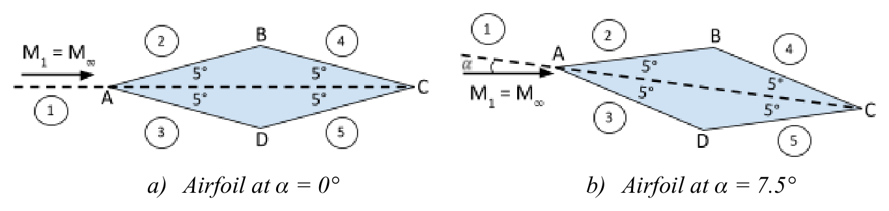
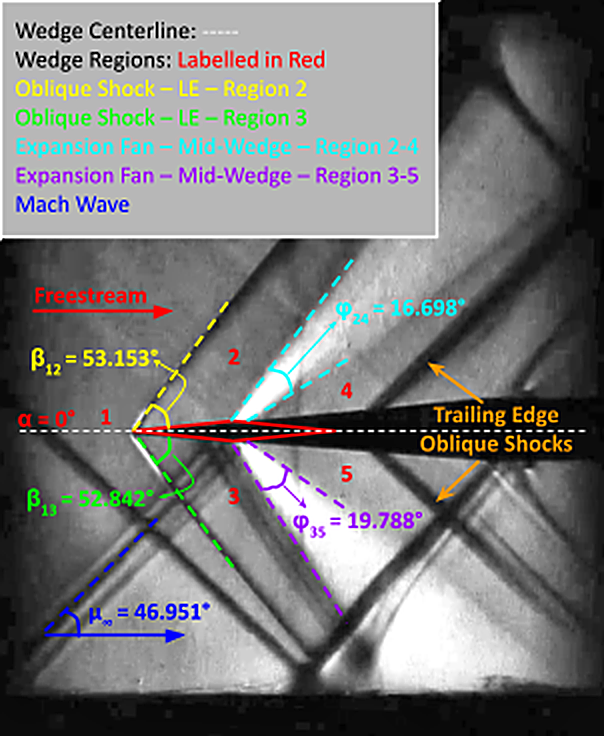
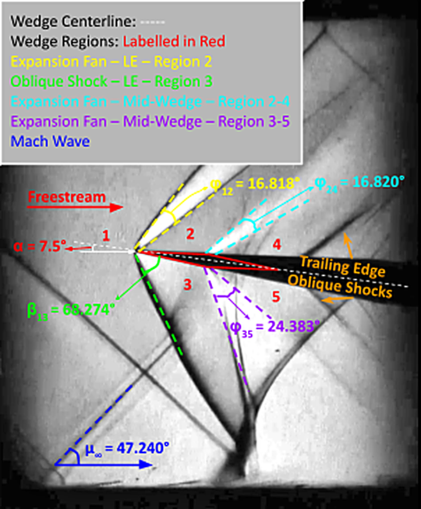

Supersonic Wind Tunnel Schlieren Experiment
Measuring supersonic flow over a lifting double-wedge aerofoil at M ≈ 1.4 and testing where shock-expansion theory holds, and where it breaks down.
Overview
- Individual coursework for EMS613U – Aerodynamics of High Speed Flows, based on testing carried out in a lab group at QMUL's induction supersonic wind tunnel.
- Extracted Mach, shock, and expansion-wave angles from the schlieren videos, then compared them against inviscid shock-expansion theory and linearised theory to estimate pressures and force coefficients.
Experimental Setup and Method
- Apparatus: Symmetrical double-wedge aerofoil (100 mm chord, 10° apex angle) on an adjustable-incidence sting, in the Whitehead Aeronautical Laboratory's induction supersonic wind tunnel (127 mm × 135 mm working section, nominal M = 1.4).
- Flow visualisation: Double-pass schlieren system. Density gradients deflect light, and a knife edge converts the deflections into intensity variations, which are recorded on video.
- Measurement: A MATLAB script I wrote extracted five frames per run at 30-frame intervals, with the PIVlab package used to enhance contrast before angle extraction. For each wave, two points were selected along the visible line and the angle computed against a defined freestream reference, then averaged across the five frames.

Uncertainty Analysis
- The dominant uncertainty was manual angle extraction from the schlieren images, not the resolution of the laboratory instrument, confirmed by propagating both through the calculation.
- Each wave angle was measured five times. The mean, standard deviation, and a 95% confidence interval (t = 2.776, 4 degrees of freedom) were computed for every reported angle.
- Uncertainties were propagated through to the derived quantities: M∞ = 1.368 ± 0.032 and P∞ = 31.44 ± 1.41 kPa at α = 0°.
- Shock angles proved far more reliable (±0.8–1.4°) than expansion-fan boundaries (±4–5°), because fan edges are diffused and contaminated by interference of reflected waves.
Results at α = 0°: Symmetric Case
- Based on shock-expansion theory, equal upper and lower pressures should give zero lift. The symmetric setup tests this directly.
- Measured leading-edge shock angles (β12 = 53.15° ± 0.83°, β13 = 52.84° ± 1.32°) agreed with the inviscid theory prediction of 54.72° to within ~2°. These shocks remained attached.
- Rear expansion fans measured below prediction (16.70° ± 4.00° and 19.79° ± 4.31° vs 27.54°). The discrepancy was attributed to the diffused fan boundaries rather than a failure of the theory, given the calculated extraction uncertainty.
- Processed pressure coefficients confirmed the symmetric case,
CL = 0 and CD = 0.0338. - The non-zero drag is wave drag. This is a supersonic flow mechanism, in direct contrast to subsonic inviscid flow where d’Alembert’s paradox gives zero drag.

Results at α = 7.5°: Lifting Case
- At this incidence angle the upper leading edge sees an expansion fan, the lower a strong oblique shock.
- The upper surface follows Prandtl-Meyer behaviour as expected. The Mach number rises from 1.362 to 1.449 and then 1.789 along the surface, with static pressure falling accordingly.
- The lower surface does not follow the attached-shock assumption. The schlieren image shows a curved leading-edge shock, and the post-shock Mach number drops to 0.930. The flow becomes subsonic locally, so no valid attached θ–β–Mach solution exists.
- The measured β13 = 68.27° ± 1.41° was interpreted as evidence of shock detachment. This result matched the behaviour reported for lifting double-wedges in NASA's Gooderum & Wood study (1956).
- To still produce force estimates, I applied a sonic approximation (M3 ≈ 1.01) for the lower-surface expansion, giving CL = 0.399 and CD = 0.0874, which were explicitly flagged as modelled estimates, not direct measurements.

Limitations and Future Work
- Shock-expansion theory assumes straight surfaces, attached waves, and uniform regions, assumptions the 7.5° test case violates.
- Linearised theory underestimates both compression and expansion, as it assumes small flow-turning angles (< ~4°), whereas the wedge turns the flow by 5–12.5°.
- The tunnel’s power requirements allowed only one run per incidence angle, so every angle had to come from the individual schlieren videos.
- For future tests, surface pressure taps would validate the inferred pressures and force coefficients directly, instead of relying entirely on wave-angle extraction.
Key Outcomes
- Validated shock-expansion theory at α = 0° to within ~2° on shock angles, and demonstrated wave drag (CD = 0.0338) as a supersonic drag mechanism.
- Identified and physically explained the breakdown of attached-shock theory at α = 7.5°, compared against published NASA experimental data.
- Applied a sonic approximation to extract force estimates where theory no longer worked. Propagated measurement uncertainty through to derived quantities.